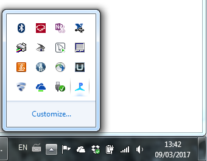

PamDog, the PAMGuard watchdog program, can be used when you want to start PAMGuard automatically and want to ensure that it never, ever stops, or if it does stop accidentally due to a fault, it will restart itself.
PamDog is particularly useful when a PAM system needs to be left running unattended.
PamDog has only been tested under Windows. Some functions may not be available under other operating systems but the main ones should be OK.

Since PAMGuard release 2.02.03, PamDog has been included in the PAMGuard build, but is not set up to run automatically when Windows starts. To start PamDog, you no longer need to install Java yourself. Simply double click on the file PamguardBeta_WatchDog.exe which you'll find in the PAMGuard installation folder (probably C:\Program Files\Pamguard). See below for instructions on making PamDog start with Windows.
By default, no user interface will be displayed. PamDog will run in the background and can be configured via an icon which will appear in the Tray Icon area, that's the little icons down in the bottom right corner of the Windows task bar
If you are using the watchdog DO NOT start PAMGuard in the normal way from the Windows Start menu. PamDog has to start PAMGuard with some specific options enabled so that PamDog and PAMGuard can communicate. These options will not be available if you've started PAMGuard from the Start menu.
A typical sequence of operations required to use PamDog successfully is as follows:
You should not run more than one instance of PamDog at a time. Most users will want PamDog to launch automatically when Windows starts. To make PamDog launch automatically, the easiest way is simply to create a shortcut to the PamguardBeta_WatchDog.exe program in your Start folder.
To locate the Start folder click on the Windows Start button, then RIGHT click on 'All Programs'. A small menu should apear. Select 'Open' and a Windows explorer window should open in a folder with a name something like 'C:\Users\*yourusername*\AppData\Roaming\Microsoft\Windows\Start Menu' Go into 'Programs' then into 'Startup' so that you're in a folder with a name like 'C:\Users\*yourusername*\AppData\Roaming\Microsoft\Windows\Start Menu\Programs\Startup'. Right click on PamguardBeta_WatchDog.exe and drag across to the Startup folder. Release the mouse and select "Create Shortcuts here" from the menu. Don't drag the actual .exe file across !
Restart your computer and check that PamDog has started automatically by searching for it in the Tray Icon area.
To configure PamDog, go to the System tray and find the PAMGuard watchdog icon. Click on it to open the configuration dialog or right click on it for other options.
Configuration and control options are spread over three tabs, Control, Pamguard and Java. All controls in the dialog have tool tips - hover the mouse over them and they will provide some information on what they do.
The Control panel controls whether or not the Watchdog is active. If the watchdog is correctly configured and the "Activate Watchdog" button is checked, then PAMGuard will be launched automatically and if PAMGuard is stopped, will immediately restart
Activate Watchdog: Activates or deactivates the watchdog.
UDP Port: UDP (network protocol) port for communication between PamDog and PAMGuard.
Allow system restarts: Will restart Windows if the watchdog fails to start PAMGuard several times in succession. Note that if this option is selected and PAMGuard cannot start for some fundamental reason, such as an acquisition device becoming disconnected, then the computer will continually reboot. The reboot cycle is relatively slow so there should always be sufficient time one the computer has restarted to deactivate the watchdog.
open log file folder: Opens a folder containing PAMGuard and PamDog log files. Note that information displayed in the terminal window when PAMGuard is running normally is written to a log file when PAMGuard is launched by PamDog.

The Pamguard panel controls the location of important PAMGuard files and folders and tells PamDog which PAMGuard configuration file should be used.
Working Directory: The folder containing the PAMGuard executable jar file. Normally this will be something like C:\Program Files\Pamguard64.
Pamguard Executable jar: The main PAMGuard jar file which must be in the Working Directory.
Pamguard Configuration file: The PAMguard configuration (.psf) file.
Library path: The name of a folder containing library files which must be in the Working Directory which will be either lib or lib64 for 32 or 64 bit versions of PAMGuard and the Java virtual machine.
Other PAMGuard command line options: Leave blank. This is for the use of the PAMGuard development team.

The Java panel controls the Java virtual machine which is required to run PAMGuard.
Java Executable: The Java runtime executable program. This is always called java.exe and will normally be found in a folder with a name like 'C:\Program Files (x86)\Java\jre1.*.*_**\bin' for 32 bit Java versions or 'C:\Program Files\Java\jre1.*.*_**\bin' for 64 bit Java versions. For advanced functionality (including better task killing capabilities), use the java.exe found in a jdk**** folder instead of a jre**** folder.
Min VM Memory: The minimum amount of memory to allocate to the Java virtual machine.
Max VM Memory: The maximum amount of memory to allocate to the Java virtual machine. 32 bit versions of Java can have a maximum of 1024 Mega bytes of memory, 64 bit versions can use up to 8192 Mega bytes
Other VM command line options: Leave blank. This is for the use of the PAMGuard development team.